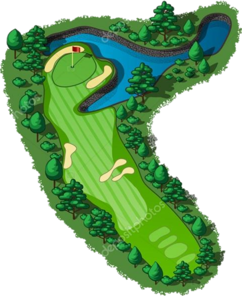

Le terrain :
Un parcours de golf est souvent constitué de 18 trous qui suivent à peu près le même schéma :
|

|
- Le départ où se passe le premier tir
- Le fairway qui est entouré du rough et à la fin le green où se situe le trou.
- Le green sur lequel se trouve le trou
- Il peut y avoir des obstacles sur le terrain tels que des bunkers qui sont constitués de sable et les obstacles d'eau, il existe d'autres obstacles, mais ces deux-là sont les plus courants.
|